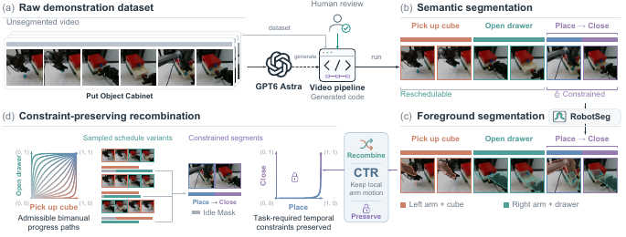

Learn the Task, Not the Schedule: Reducing Spurious Cross-Arm Coupling in Bimanual Imitation Learning
Abstract
A bimanual demonstration specifies both what the robot should do and one particular schedule for when each arm should act. Standard imitation learning does not distinguish task-required cross-arm constraints from incidental scheduling choices, and may therefore exploit opposite-arm progress as a shortcut cue, creating spurious cross-arm coupling even where relative timing is irrelevant for the current task phase. We introduce Constraint-preserving Temporal Recombination (CTR), a training-time data intervention that preserves recorded arm-local sensorimotor content while retiming the corresponding segments to realize admissible schedules that preserve task-required cross-arm constraints. We use CTR to train Diffusion Policy, Action Chunking with Transformers, and π0.5, and evaluate them on four simulated and four real-robot tasks. Across six real-robot bimanual progress-state initializations, CTR raises worst-state success from 56% for the strongest non-CTR schedule mixture to 76%. With π0.5 on an Independent task, a 4 s pause transfers 2.56 s of delay to the opposite arm under the Concurrent schedule distribution, but only 0.25 s with CTR. On real robots, CTR violates task constraints in only 0–4% of trials, versus 36–98% for narrow-schedule baselines.